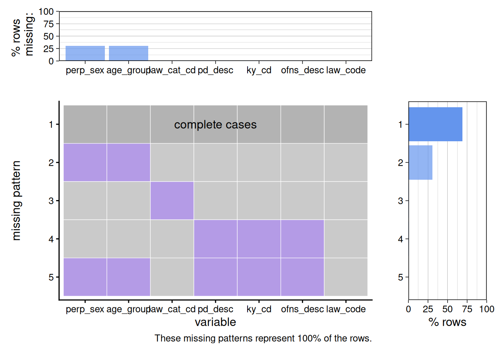
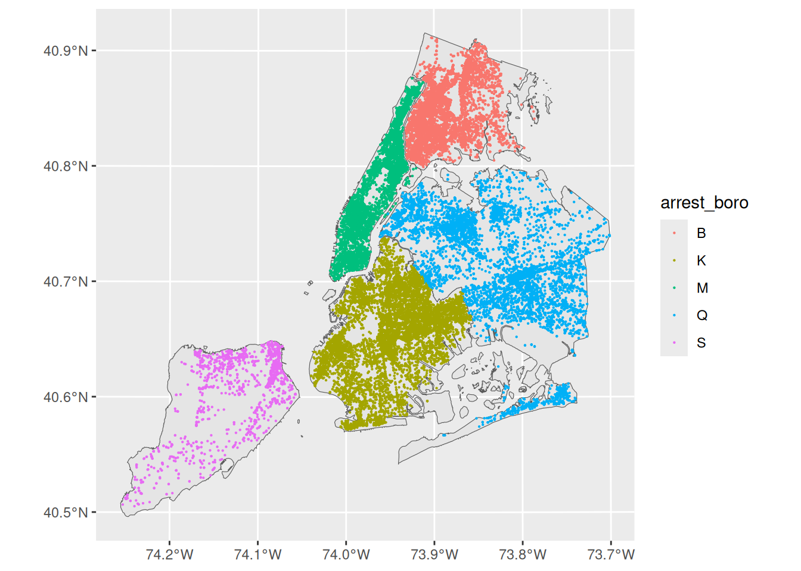
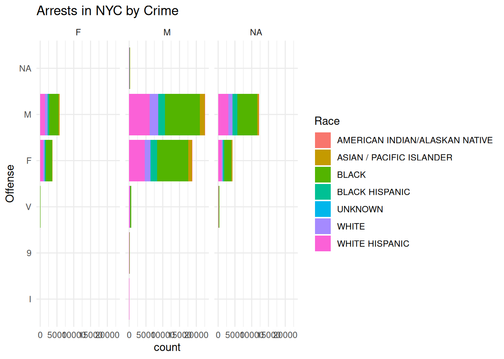
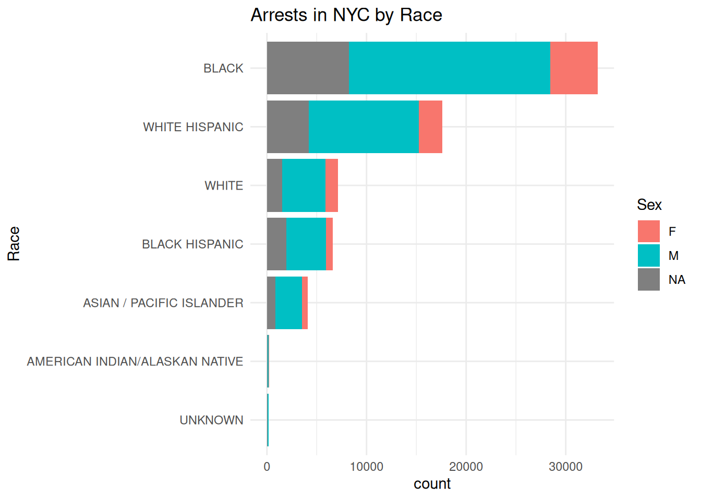
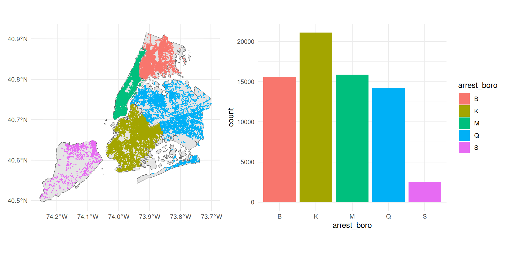
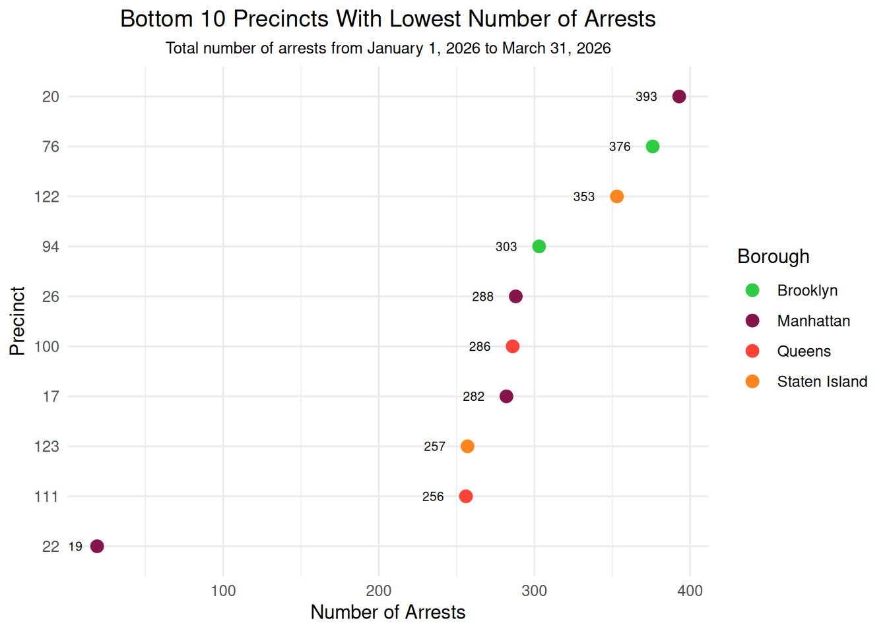
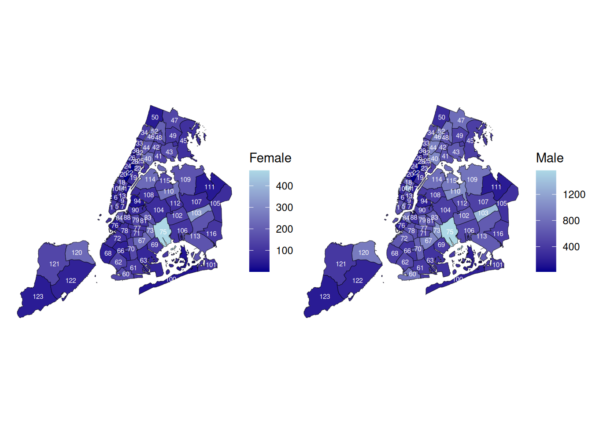
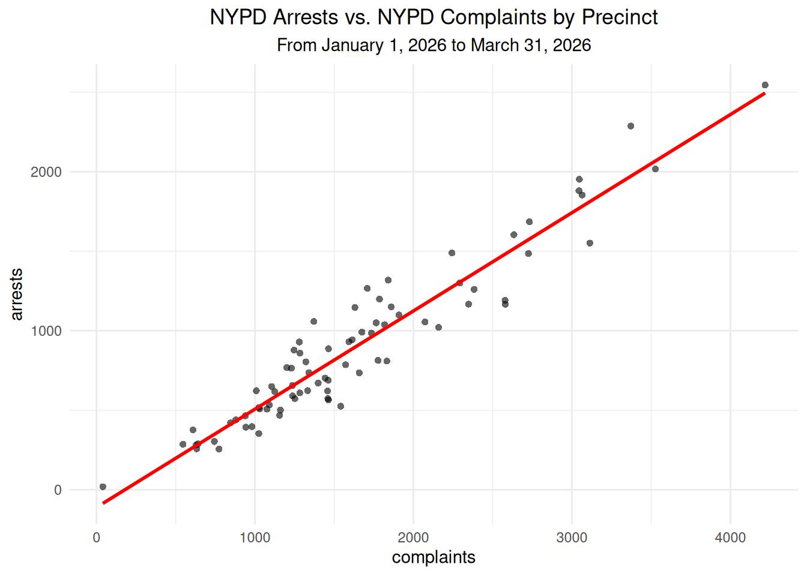

spc_tbl_ [69,000 × 19] (S3: spec_tbl_df/tbl_df/tbl/data.frame)
$ arrest_key : num [1:69000] 3.18e+08 3.18e+08 3.19e+08 3.19e+08 3.19e+08 ...
$ arrest_date : POSIXct[1:69000], format: "2026-01-06" "2026-01-03" ...
$ pd_cd : num [1:69000] 105 203 105 397 397 263 548 777 109 397 ...
$ pd_desc : chr [1:69000] "STRANGULATION 1ST" "TRESPASS 3, CRIMINAL" "STRANGULATION 1ST" "ROBBERY,OPEN AREA UNCLASSIFIED" ...
$ ky_cd : num [1:69000] 106 352 106 105 105 114 350 NA 106 105 ...
$ ofns_desc : chr [1:69000] "FELONY ASSAULT" "CRIMINAL TRESPASS" "FELONY ASSAULT" "ROBBERY" ...
$ law_code : chr [1:69000] "PL 1211200" "PL 140100G" "PL 1211200" "PL 160102B" ...
$ law_cat_cd : chr [1:69000] "F" "M" "F" "F" ...
$ arrest_boro : chr [1:69000] "Q" "K" "B" "M" ...
$ arrest_precinct : num [1:69000] 110 77 48 28 45 28 41 67 120 103 ...
$ jurisdiction_code: num [1:69000] 0 1 0 0 0 0 0 0 0 0 ...
$ age_group : chr [1:69000] "25-44" "25-44" "25-44" NA ...
$ perp_sex : chr [1:69000] "M" "M" "M" NA ...
$ perp_race : chr [1:69000] "BLACK" "BLACK" "WHITE HISPANIC" "BLACK" ...
$ x_coord_cd : num [1:69000] 1020232 1003358 1011780 999788 1031351 ...
$ y_coord_cd : num [1:69000] 210719 182945 246837 233328 254245 ...
$ latitude : num [1:69000] 40.7 40.7 40.8 40.8 40.9 ...
$ longitude : num [1:69000] -73.9 -73.9 -73.9 -73.9 -73.8 ...
$ geocoded_column : chr [1:69000] "POINT (-73.870145 40.744989)" "POINT (-73.93112014 40.66879784)" "POINT (-73.9005 40.844152)" "POINT (-73.943874 40.807102)" ...
- attr(*, "spec")=
.. cols(
.. arrest_key = col_double(),
.. arrest_date = col_datetime(format = ""),
.. pd_cd = col_double(),
.. pd_desc = col_character(),
.. ky_cd = col_double(),
.. ofns_desc = col_character(),
.. law_code = col_character(),
.. law_cat_cd = col_character(),
.. arrest_boro = col_character(),
.. arrest_precinct = col_double(),
.. jurisdiction_code = col_double(),
.. age_group = col_character(),
.. perp_sex = col_character(),
.. perp_race = col_character(),
.. x_coord_cd = col_double(),
.. y_coord_cd = col_double(),
.. latitude = col_double(),
.. longitude = col_double(),
.. geocoded_column = col_character()
.. )
- attr(*, "problems")=<pointer: 0x55e20fab5060> 4 NYPD Arrest Data
By: Jade Amaya
4.1 Introduction
I was inspired to select the NYPD Arrest (Historic) Data in lieu of other courses that discuss psychology, law, and history. I’m interested in studying the demographics of people arrested in NYC, specifically their demographics. Some questions I hope to answer are: What groups of people are being arrested the most? What are the trends of arrests? What types of crimes are people arrested for? Where are most of these arrests happening?
4.2 Data
4.2.1 Description
The data was collected by the NYPD and published by NYC’s Open Data team. The data was imported, using an API from the NYPD Arrest (Year to Date) Data set. The dataframe contains 19 columns and 1000 rows. The data is updated every year some time during mid to late April. Some limitations of this dataset is that by using an API, only 1000 rows can be imported at a time, there is no data provided that informs us whether or not these arrested people were let go, whether they were scheduled a trial, or whether some of these arrests pertain to the same individual; that some demographic information pertaining to individuals are missing; and that even though these people were arrested, cannot say for certain all actually committed the crime.
Here is a link to the dataset: link
4.2.2 Missing Value Analysis
library(redav)
df_new <- df |>
select(starts_with(c("perp_sex", "age", "pd_d", "k", "o", "law_", "pd_c")))
colnames(df_new) <- str_remove_all(colnames(df_new), "PE")
plot_missing(df_new)
Most of the rows in the dataset contained no missing values. Above the graph shows that the second most common pattern had sex and age group missing values. The third pattern included all other columns without missing values, but the level of defense.
4.3 Results
4.3.1 Where are arrests concentrated?
#|warning: false
library(sf)
nybb <- st_read("nybb_26a/nybb.shp")Reading layer `nybb' from data source
`/home/runner/work/3702project/3702project/nybb_26a/nybb.shp'
using driver `ESRI Shapefile'
Simple feature collection with 5 features and 4 fields
Geometry type: MULTIPOLYGON
Dimension: XY
Bounding box: xmin: 913175.1 ymin: 120128.4 xmax: 1067383 ymax: 272844.3
Projected CRS: NAD83 / New York Long Island (ftUS)nybb <- nybb |>
mutate(BoroCode = recode(BoroCode, `1` = "M", `2` = "B", `3` = "K",
'4' = "Q", '5' = "S")) |>
rename(arrest_boro = BoroCode)
df <- read_csv("https://data.cityofnewyork.us/resource/uip8-fykc.csv?$limit=69000", na = c("(null)", ""))points_sf <- df |>
select(longitude, latitude, arrest_boro) |>
na.omit() |>
st_as_sf(coords = c("longitude", "latitude"), crs = 4326)
ggplot() +
geom_sf(data = nybb) +
geom_sf(data = points_sf, size = .1, aes(color = arrest_boro))
theme_minimal()<theme> List of 144
$ line : <ggplot2::element_line>
..@ colour : chr "black"
..@ linewidth : num 0.5
..@ linetype : num 1
..@ lineend : chr "butt"
..@ linejoin : chr "round"
..@ arrow : logi FALSE
..@ arrow.fill : chr "black"
..@ inherit.blank: logi TRUE
$ rect : <ggplot2::element_rect>
..@ fill : chr "white"
..@ colour : chr "black"
..@ linewidth : num 0.5
..@ linetype : num 1
..@ linejoin : chr "round"
..@ inherit.blank: logi TRUE
$ text : <ggplot2::element_text>
..@ family : chr ""
..@ face : chr "plain"
..@ italic : chr NA
..@ fontweight : num NA
..@ fontwidth : num NA
..@ colour : chr "black"
..@ size : num 11
..@ hjust : num 0.5
..@ vjust : num 0.5
..@ angle : num 0
..@ lineheight : num 0.9
..@ margin : <ggplot2::margin> num [1:4] 0 0 0 0
..@ debug : logi FALSE
..@ inherit.blank: logi TRUE
$ title : <ggplot2::element_text>
..@ family : NULL
..@ face : NULL
..@ italic : chr NA
..@ fontweight : num NA
..@ fontwidth : num NA
..@ colour : NULL
..@ size : NULL
..@ hjust : NULL
..@ vjust : NULL
..@ angle : NULL
..@ lineheight : NULL
..@ margin : NULL
..@ debug : NULL
..@ inherit.blank: logi TRUE
$ point : <ggplot2::element_point>
..@ colour : chr "black"
..@ shape : num 19
..@ size : num 1.5
..@ fill : chr "white"
..@ stroke : num 0.5
..@ inherit.blank: logi TRUE
$ polygon : <ggplot2::element_polygon>
..@ fill : chr "white"
..@ colour : chr "black"
..@ linewidth : num 0.5
..@ linetype : num 1
..@ linejoin : chr "round"
..@ inherit.blank: logi TRUE
$ geom : <ggplot2::element_geom>
..@ ink : chr "black"
..@ paper : chr "white"
..@ accent : chr "#3366FF"
..@ linewidth : num 0.5
..@ borderwidth: num 0.5
..@ linetype : int 1
..@ bordertype : int 1
..@ family : chr ""
..@ fontsize : num 3.87
..@ pointsize : num 1.5
..@ pointshape : num 19
..@ colour : NULL
..@ fill : NULL
$ spacing : 'simpleUnit' num 5.5points
..- attr(*, "unit")= int 8
$ margins : <ggplot2::margin> num [1:4] 5.5 5.5 5.5 5.5
$ aspect.ratio : NULL
$ axis.title : NULL
$ axis.title.x : <ggplot2::element_text>
..@ family : NULL
..@ face : NULL
..@ italic : chr NA
..@ fontweight : num NA
..@ fontwidth : num NA
..@ colour : NULL
..@ size : NULL
..@ hjust : NULL
..@ vjust : num 1
..@ angle : NULL
..@ lineheight : NULL
..@ margin : <ggplot2::margin> num [1:4] 2.75 0 0 0
..@ debug : NULL
..@ inherit.blank: logi TRUE
$ axis.title.x.top : <ggplot2::element_text>
..@ family : NULL
..@ face : NULL
..@ italic : chr NA
..@ fontweight : num NA
..@ fontwidth : num NA
..@ colour : NULL
..@ size : NULL
..@ hjust : NULL
..@ vjust : num 0
..@ angle : NULL
..@ lineheight : NULL
..@ margin : <ggplot2::margin> num [1:4] 0 0 2.75 0
..@ debug : NULL
..@ inherit.blank: logi TRUE
$ axis.title.x.bottom : NULL
$ axis.title.y : <ggplot2::element_text>
..@ family : NULL
..@ face : NULL
..@ italic : chr NA
..@ fontweight : num NA
..@ fontwidth : num NA
..@ colour : NULL
..@ size : NULL
..@ hjust : NULL
..@ vjust : num 1
..@ angle : num 90
..@ lineheight : NULL
..@ margin : <ggplot2::margin> num [1:4] 0 2.75 0 0
..@ debug : NULL
..@ inherit.blank: logi TRUE
$ axis.title.y.left : NULL
$ axis.title.y.right : <ggplot2::element_text>
..@ family : NULL
..@ face : NULL
..@ italic : chr NA
..@ fontweight : num NA
..@ fontwidth : num NA
..@ colour : NULL
..@ size : NULL
..@ hjust : NULL
..@ vjust : num 1
..@ angle : num -90
..@ lineheight : NULL
..@ margin : <ggplot2::margin> num [1:4] 0 0 0 2.75
..@ debug : NULL
..@ inherit.blank: logi TRUE
$ axis.text : <ggplot2::element_text>
..@ family : NULL
..@ face : NULL
..@ italic : chr NA
..@ fontweight : num NA
..@ fontwidth : num NA
..@ colour : chr "#4D4D4DFF"
..@ size : 'rel' num 0.8
..@ hjust : NULL
..@ vjust : NULL
..@ angle : NULL
..@ lineheight : NULL
..@ margin : NULL
..@ debug : NULL
..@ inherit.blank: logi TRUE
$ axis.text.x : <ggplot2::element_text>
..@ family : NULL
..@ face : NULL
..@ italic : chr NA
..@ fontweight : num NA
..@ fontwidth : num NA
..@ colour : NULL
..@ size : NULL
..@ hjust : NULL
..@ vjust : num 1
..@ angle : NULL
..@ lineheight : NULL
..@ margin : <ggplot2::margin> num [1:4] 2.2 0 0 0
..@ debug : NULL
..@ inherit.blank: logi TRUE
$ axis.text.x.top : <ggplot2::element_text>
..@ family : NULL
..@ face : NULL
..@ italic : chr NA
..@ fontweight : num NA
..@ fontwidth : num NA
..@ colour : NULL
..@ size : NULL
..@ hjust : NULL
..@ vjust : NULL
..@ angle : NULL
..@ lineheight : NULL
..@ margin : <ggplot2::margin> num [1:4] 0 0 4.95 0
..@ debug : NULL
..@ inherit.blank: logi TRUE
$ axis.text.x.bottom : <ggplot2::element_text>
..@ family : NULL
..@ face : NULL
..@ italic : chr NA
..@ fontweight : num NA
..@ fontwidth : num NA
..@ colour : NULL
..@ size : NULL
..@ hjust : NULL
..@ vjust : NULL
..@ angle : NULL
..@ lineheight : NULL
..@ margin : <ggplot2::margin> num [1:4] 4.95 0 0 0
..@ debug : NULL
..@ inherit.blank: logi TRUE
$ axis.text.y : <ggplot2::element_text>
..@ family : NULL
..@ face : NULL
..@ italic : chr NA
..@ fontweight : num NA
..@ fontwidth : num NA
..@ colour : NULL
..@ size : NULL
..@ hjust : num 1
..@ vjust : NULL
..@ angle : NULL
..@ lineheight : NULL
..@ margin : <ggplot2::margin> num [1:4] 0 2.2 0 0
..@ debug : NULL
..@ inherit.blank: logi TRUE
$ axis.text.y.left : <ggplot2::element_text>
..@ family : NULL
..@ face : NULL
..@ italic : chr NA
..@ fontweight : num NA
..@ fontwidth : num NA
..@ colour : NULL
..@ size : NULL
..@ hjust : NULL
..@ vjust : NULL
..@ angle : NULL
..@ lineheight : NULL
..@ margin : <ggplot2::margin> num [1:4] 0 4.95 0 0
..@ debug : NULL
..@ inherit.blank: logi TRUE
$ axis.text.y.right : <ggplot2::element_text>
..@ family : NULL
..@ face : NULL
..@ italic : chr NA
..@ fontweight : num NA
..@ fontwidth : num NA
..@ colour : NULL
..@ size : NULL
..@ hjust : NULL
..@ vjust : NULL
..@ angle : NULL
..@ lineheight : NULL
..@ margin : <ggplot2::margin> num [1:4] 0 0 0 4.95
..@ debug : NULL
..@ inherit.blank: logi TRUE
$ axis.text.theta : NULL
$ axis.text.r : <ggplot2::element_text>
..@ family : NULL
..@ face : NULL
..@ italic : chr NA
..@ fontweight : num NA
..@ fontwidth : num NA
..@ colour : NULL
..@ size : NULL
..@ hjust : num 0.5
..@ vjust : NULL
..@ angle : NULL
..@ lineheight : NULL
..@ margin : <ggplot2::margin> num [1:4] 0 2.2 0 2.2
..@ debug : NULL
..@ inherit.blank: logi TRUE
$ axis.ticks : <ggplot2::element_blank>
$ axis.ticks.x : NULL
$ axis.ticks.x.top : NULL
$ axis.ticks.x.bottom : NULL
$ axis.ticks.y : NULL
$ axis.ticks.y.left : NULL
$ axis.ticks.y.right : NULL
$ axis.ticks.theta : NULL
$ axis.ticks.r : NULL
$ axis.minor.ticks.x.top : NULL
$ axis.minor.ticks.x.bottom : NULL
$ axis.minor.ticks.y.left : NULL
$ axis.minor.ticks.y.right : NULL
$ axis.minor.ticks.theta : NULL
$ axis.minor.ticks.r : NULL
$ axis.ticks.length : 'rel' num 0.5
$ axis.ticks.length.x : NULL
$ axis.ticks.length.x.top : NULL
$ axis.ticks.length.x.bottom : NULL
$ axis.ticks.length.y : NULL
$ axis.ticks.length.y.left : NULL
$ axis.ticks.length.y.right : NULL
$ axis.ticks.length.theta : NULL
$ axis.ticks.length.r : NULL
$ axis.minor.ticks.length : 'rel' num 0.75
$ axis.minor.ticks.length.x : NULL
$ axis.minor.ticks.length.x.top : NULL
$ axis.minor.ticks.length.x.bottom: NULL
$ axis.minor.ticks.length.y : NULL
$ axis.minor.ticks.length.y.left : NULL
$ axis.minor.ticks.length.y.right : NULL
$ axis.minor.ticks.length.theta : NULL
$ axis.minor.ticks.length.r : NULL
$ axis.line : <ggplot2::element_blank>
$ axis.line.x : NULL
$ axis.line.x.top : NULL
$ axis.line.x.bottom : NULL
$ axis.line.y : NULL
$ axis.line.y.left : NULL
$ axis.line.y.right : NULL
$ axis.line.theta : NULL
$ axis.line.r : NULL
$ legend.background : <ggplot2::element_blank>
$ legend.margin : NULL
$ legend.spacing : 'rel' num 2
$ legend.spacing.x : NULL
$ legend.spacing.y : NULL
$ legend.key : <ggplot2::element_blank>
$ legend.key.size : 'simpleUnit' num 1.2lines
..- attr(*, "unit")= int 3
$ legend.key.height : NULL
$ legend.key.width : NULL
$ legend.key.spacing : NULL
$ legend.key.spacing.x : NULL
$ legend.key.spacing.y : NULL
$ legend.key.justification : NULL
$ legend.frame : NULL
$ legend.ticks : NULL
$ legend.ticks.length : 'rel' num 0.2
$ legend.axis.line : NULL
$ legend.text : <ggplot2::element_text>
..@ family : NULL
..@ face : NULL
..@ italic : chr NA
..@ fontweight : num NA
..@ fontwidth : num NA
..@ colour : NULL
..@ size : 'rel' num 0.8
..@ hjust : NULL
..@ vjust : NULL
..@ angle : NULL
..@ lineheight : NULL
..@ margin : NULL
..@ debug : NULL
..@ inherit.blank: logi TRUE
$ legend.text.position : NULL
$ legend.title : <ggplot2::element_text>
..@ family : NULL
..@ face : NULL
..@ italic : chr NA
..@ fontweight : num NA
..@ fontwidth : num NA
..@ colour : NULL
..@ size : NULL
..@ hjust : num 0
..@ vjust : NULL
..@ angle : NULL
..@ lineheight : NULL
..@ margin : NULL
..@ debug : NULL
..@ inherit.blank: logi TRUE
$ legend.title.position : NULL
$ legend.position : chr "right"
$ legend.position.inside : NULL
$ legend.direction : NULL
$ legend.byrow : NULL
$ legend.justification : chr "center"
$ legend.justification.top : NULL
$ legend.justification.bottom : NULL
$ legend.justification.left : NULL
$ legend.justification.right : NULL
$ legend.justification.inside : NULL
[list output truncated]
@ complete: logi TRUE
@ validate: logi TRUE4.3.2 What are the top crimes people are arrested for?
library(ggplot2)
library(forcats)
ggplot(df, aes(y = law_cat_cd)) +
geom_bar(aes(y = fct_rev(fct_infreq(law_cat_cd)), fill = perp_race)) +
theme_minimal() +
scale_color_manual() +
labs(title = "Arrests in NYC by Crime", x = "count",
y = "Offense", fill = "Race") +
facet_wrap(vars(perp_sex)) 
The graph represents the total counts of crime type by race, compared across gender groups, where NA was a non-specified sex. The crime codes are the following: F (felony); M (misdemeanor); V (violation); 9 (infraction).
4.3.3 Who are being arrested?
library(ggplot2)
library(forcats)
ggplot(df, aes(y = perp_race)) +
geom_bar(aes(y = fct_rev(fct_infreq(perp_race)), fill = perp_sex)) +
theme_minimal() +
labs(title = "Arrests in NYC by Race", x = "count", y = "Race", fill = "Sex")
library(tidyverse)
library(sf)
library(readxl)
nypp <- read_sf("nypp_25c/nypp.shp")
df <- df |>
rename(Precinct = arrest_precinct)
newer <- left_join(nypp, df) |>
select(c("Precinct", "perp_race", "Shape_Leng", "Shape_Area", "geometry")) |>
group_by(perp_race, Precinct) |>
summarise(race_count = n())
ggplot(newer) +
geom_sf(aes(fill = perp_race)) +
geom_sf_text(aes(label = Precinct), size = 2, color = "white") +
theme_void() +
facet_wrap(vars(perp_race))
newdata <- left_join(nypp, df) |>
select(c("Precinct", "perp_sex", "Shape_Leng", "Shape_Area", "geometry")) |>
filter(perp_sex == "M") |>
group_by(Precinct) |>
summarise(Male = n())
male <- ggplot(newdata) +
geom_sf(aes(fill = Male)) +
geom_sf_text(aes(label = Precinct), size = 2,
color = "white") +
scale_fill_gradient(low = "lightblue", high = "purple",
na.value = "grey70") +
theme_void() library(patchwork)
women <- left_join(nypp, df) |>
select(c("Precinct", "perp_sex", "Shape_Leng", "Shape_Area", "geometry")) |>
filter(perp_sex == "F") |>
group_by(Precinct) |>
summarise(Female = n())
female <- ggplot(women) +
geom_sf(aes(fill = Female)) +
geom_sf_text(aes(label = Precinct), size = 2,
color = "white") +
scale_fill_gradient(low = "lightblue", high = "purple",
na.value = "grey70") +
theme_void()
female | male
white <- left_join(nypp, df) |>
select(c("Precinct", "perp_race", "Shape_Leng", "Shape_Area", "geometry")) |>
filter(perp_race == "WHITE") |>
group_by(Precinct) |>
summarise(
white_count = n())
black <- left_join(nypp, df) |>
select(c("Precinct", "perp_race", "Shape_Leng", "Shape_Area", "geometry")) |>
filter(perp_race == "BLACK") |>
group_by(Precinct) |>
summarise(
black_count = n())
g1 <- ggplot(white) +
geom_sf(aes(fill = white_count)) +
geom_sf_text(aes(label = Precinct), size = 2,
color = "white") +
theme_void()
g2 <- ggplot(black) +
geom_sf(aes(fill = black_count)) +
geom_sf_text(aes(label = Precinct), size = 2,
color = "white") +
theme_void()
library(patchwork)
g1 + g2
race_counts <- newer |>
group_by(Precinct, perp_race) |>
mutate(count = n()) |>
ungroup()
prop_data <- race_counts |>
group_by(Precinct) |>
mutate(prop = count / sum(count))
ggplot(prop_data) +
geom_sf(aes(fill = prop)) +
geom_sf_text(aes(label = Precinct), size = 2, color = "white") +
facet_wrap(~perp_race) +
theme_minimal()